| Name |
Image |
Tier |
Description |
Flavor |
| Spell Book |
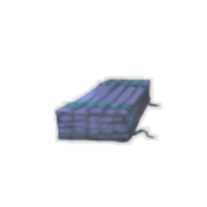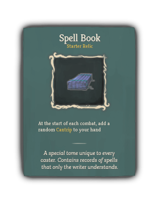 |
Starter |
At the start of each combat, add a random Cantrip to your hand |
A special tome unique to every caster. Contains records of spells that only the writer understands. |
| Training Manual |
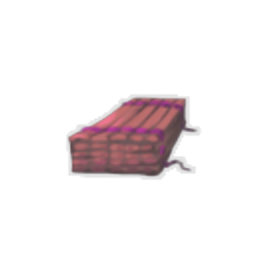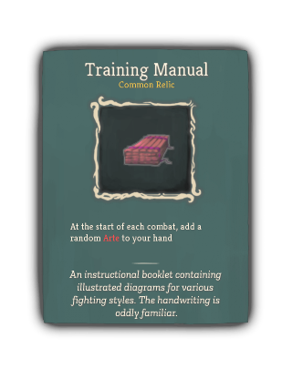 |
Common |
At the start of each combat, add a random Arte to your hand |
An instructional booklet containing illustrated diagrams for various fighting styles. The handwriting is oddly familiar. |
| Rabbit's Foot |
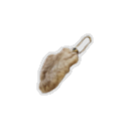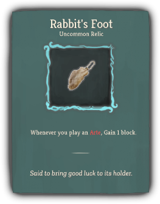 |
Uncommon |
Whenever you play an Arte, Gain 1 block. |
Said to bring good luck to its holder. |
| Runic Prism |
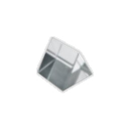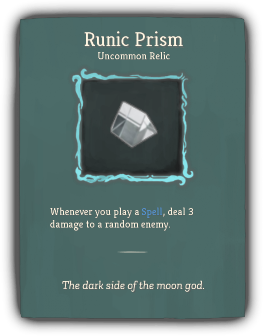 |
Uncommon |
Whenever you play a Spell, deal 3 damage to a random enemy. |
The dark side of the moon god. |
| Kama |
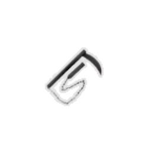 |
Rare |
Every fifth card you play, gain 1 Strength if that card was an Arte, and gain 1 Dexterity if that card was a Spell. |
Commonly used to reap wheat and souls. |
| Blessed Book |
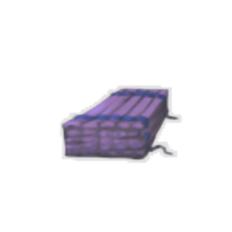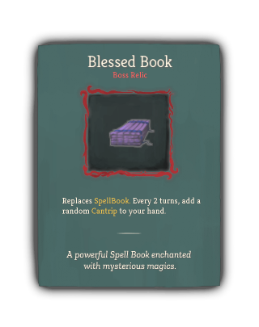 |
Boss |
Replaces SpellBook. Every 2 turns, add a random Cantrip to your hand. |
A powerful Spell Book enchanted with mysterious magics. |
| Crystal Ball |
 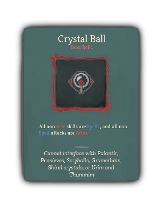 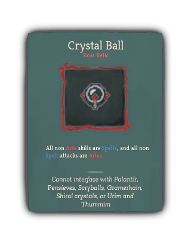 |
Boss |
All non Arte skills are Spells, and all non Spell attacks are Artes. |
Cannot interface with Palantir, Pensieves, Scryballs, Gramerhain, Shiral crystals, or Urim and Thummim |
| Deck Of Many Things |
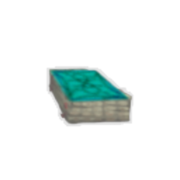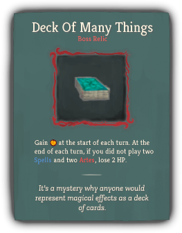 |
Boss |
Gain [E] at the start of each turn. At the end of each turn, if you did not play two Spells and two Artes, lose 2 HP. |
It's a mystery why anyone would represent magical effects as a deck of cards. |
| Bent Spoon |
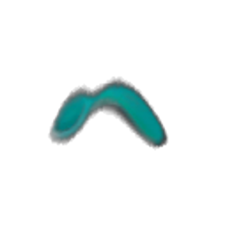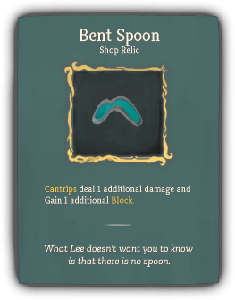 |
Shop |
Cantrips deal 1 additional damage and Gain 1 additional Block. |
What Lee doesn't want you to know is that there is no spoon. |
{kind=link}
{kind=link}
{kind=link}
{kind=link}

{kind=link}
{kind=link}
{kind=link}
{kind=link}